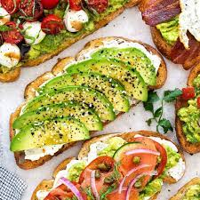

AVOCADO TOAST

A Moderately Zesty Take On A Classic
I'm a huge fan of avocado toast, but I often hate the way others make the dish.
Inventory check! Make sure you have these in your pantry before you move on.
Ingredients (1 Serving)
(easily scalable in case you have guests)
- avocado
- lemon
- Dave's Bread (preferred, but not required)
- egg
- alfalfa sprouts
- crushed red pepper
- salt
- butter
- spinach
- siracha sauce (optional)
Steps
- Skin the avocado, extract the seed, and place it in a bowl.
- Cut a lemon in half, and squeeze both halves over the avocado.
- Begin mashing the juicy-cado until it attains a paste-like consistency. This is a good time to add some salt. How much you'd like is up to your taste palette.
- Mix and mash the amalgamation until the salt is well-blended and there are no clumps.
- This is a good time to start boiling your eggs
- Begin toasting your bread. Although a conventional toaster would take less effort, it's important that you toast the bread on a pan with melted butter. Feel free to add/subtract butter depending on your diet.
- Once your bread is toasted, cut all of the slices into halves
- Begin applying your recently made avo-spread to the bread.
- Top one side of a slice of bread with alfalfa sprouts. You'll notice that the avo-spread you made gives the sprouts some stability on that bread. Try not to put too much; we still need to add the egg and it's mainly for aesthetic purposes anyway...
- Once the eggs are done boiling, crack them, cut them in half (horizontally, not vertically), and firmly set the half-egg on toast/avocado/sprouts you prepared earlier
PROTIP: Do not set the egg on top of the sprouts! It'll fall off!
- Finally, top off your creation with a spinkling of crushed red pepper, an artistic drizzle of siracha sauce, and lastly, a single spinach leaf on top of the egg. Be sure to use the siracha as an adhesive for the spinach leaf.
And just like that, you're done! c:
Back to Recipes